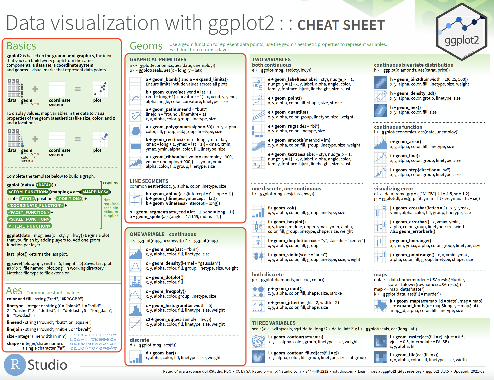
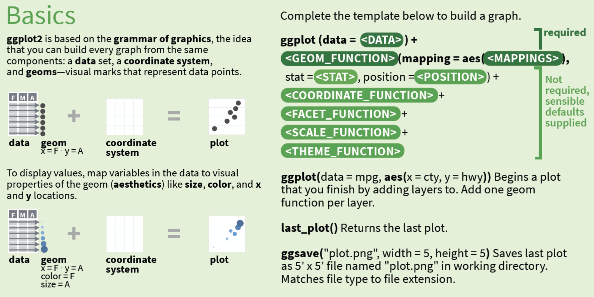
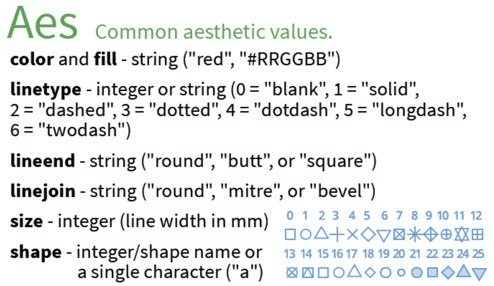
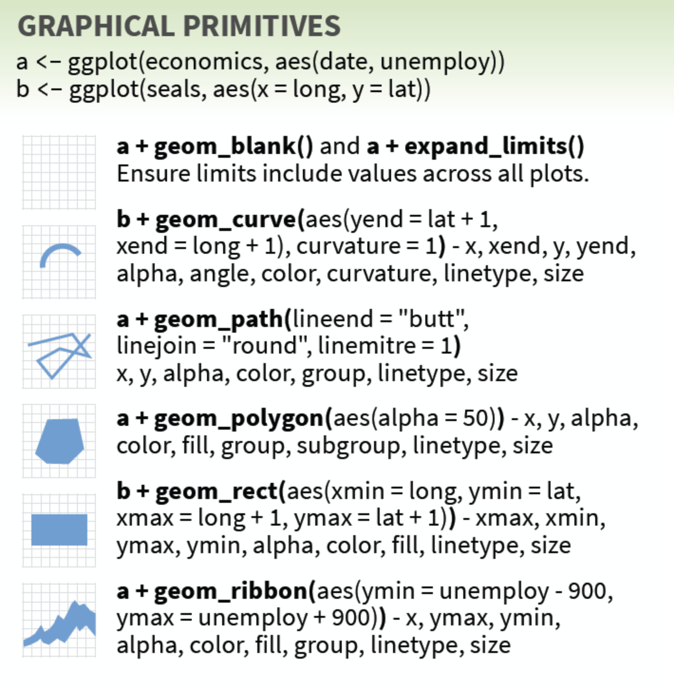
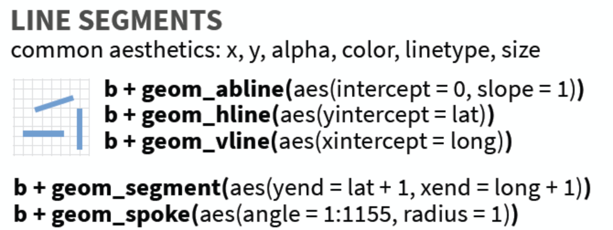
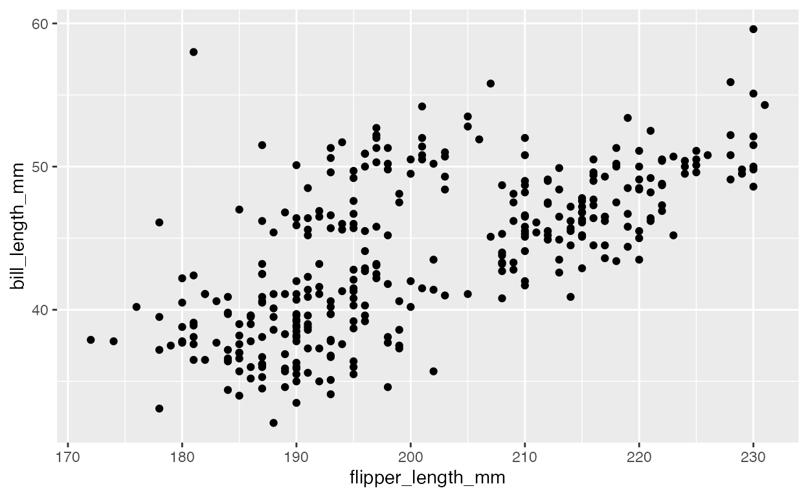
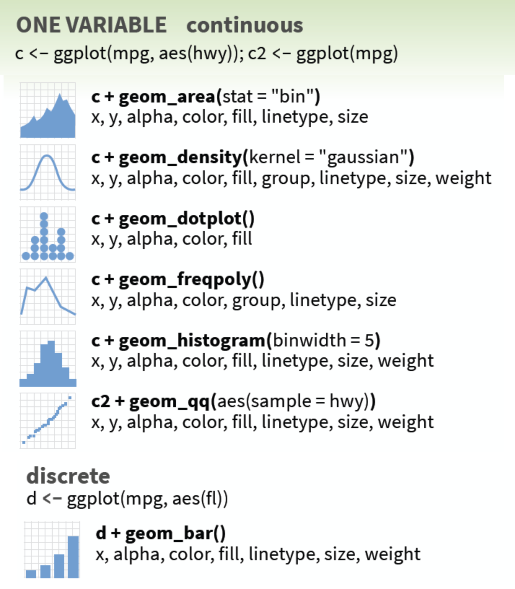

Overview

These exercises will cover part 1 of page 1 in the
ggplot2 cheatsheet. Download the cheatsheet here.
ggplot2 basics
This section covers the first portion of the cheatsheet.

- data = a rectangular data object
(
data.frameortibble)
- geoms = ‘geometric elements’ (what you actually
see in the plot)
- coordinate systems = how the data are mapped to the
underlying graphical plane (the default is an
x/y, or Cartesian coordinate system)
- plot = plot object
When we pass a plot object to the class() function, we
see the following:
class(plot)
[1] "gg" "ggplot"ggplot2 templates
The cheatsheet provides a template for creating plots with
ggplot2.
These required functions and arguments are described below:
Graphs are initialized with a dataset and the
ggplot()functionggplot(<DATA>)
Visual elements
geomsare used to represent the data values<GEOM_FUNCTION>()
Variables are mapped as aesthetics to locations (
x,y) and visual properties (color,fill, etc.)mapping = aes(<MAPPINGS>)
It’s important to note that the template above provides the minimum
functions required to create a plot with ggplot2, but these
functions can be provided in multiple arrangements.
For example, we could map the variables inside the initial
ggplot() function (which sets these aesthetics
globally, meaning they will be inherited by any subsequent
geom layers).
If you’re using pipes (%>%), we could begin with the
<DATA>, pipe this to the
ggplot() function, then add the
<GEOM_FUNCTION>() and aesthetic
<MAPPINGS>.
Be careful! A common mistake is forgetting that we
combine ggplot2 functions using + (and not
%>%)
Aesthetics
Below are the Common aesthetic values from the cheatsheet:

Below is a table of the values with a little more information on each one.
| Aesthetic | Value | Description |
|---|---|---|
color or fill |
"red" or "#RRGGBB" |
The color and fill can be set to a
variable or to a value. Values are provided as a string (in quotes). See
the color
section of the ggplot2 book. |
linetype |
integer or "string" |
In
Read more about |
lineend |
"round", "butt", or
"square" |
These aesthetics control the shape of the lines endings |
linejoin |
"round", "mitre", or
"bevel" |
When lines are used to join observations together, we can specify how the joining line should look. Read more in the ggplot2 book |
size |
integer (line width in mm) | size can be set with an integer value (or as a
continuous variable). |
shape |
integer/shape name or a single character ("a") |
0-25 are the acceptable integers. |
Common aesthetic values.
Graphical Primitives

These graph examples use the economics and
seals datasets from the ggplot2 package.
We’ve loaded economics and seals in the
code blocks below for you to review.
# click 'Run Code' to view the economics data
economics# click 'Run Code' to view the seals data
sealsGraph a
We’re going to create graph a so you can see what the
underlying code looks like with plot. It’s a common practice to build
plot’s iteratively with ggplot2, assigning each layer to
it’s own object (like a and b), but for
learning purposes, it’s better to see the full code for each step.
- Replace
<DATA>witheconomics
- Replace
<MAPPINGS>and mapdateto thexaxis andunemployto they.
ggplot(data = <DATA>, # provide data
mapping = aes(<MAPPINGS>)) # map aesthetics ggplot(data = economics, # data
mapping = aes(x = date, y = unemploy))geom_blank()
The geom_blank() function literally draws
nothing, but it can be helpful if we want to manually set the
ranges of x and y (instead of relying on the
original values).
For example, we might want the x and y axis
in our plot to extend beyond the available values in the
date and unemploy variables. We could store
the upper and lower limits to date and
unemploy in data_ranges
View data_ranges in the code block below:
data_rangesWhen we build our plot, we can use the values in
data_ranges to adjust the x and y
axes. We’ll use an additional geom_point() (a scatter plot)
layer to view the values with our adjusted x and
y coordinates.
In the code block below,
- Add a
geom_blank()(aftergeom_point())
- Place the
data_rangesin thedataargument
ggplot(data = economics,
mapping = aes(x = date, y = unemploy)) +
geom_point() +
____(data = ____, aes(x = x, y = y))ggplot(data = economics,
mapping = aes(x = date, y = unemploy)) +
geom_point() +
geom_blank(data = data_ranges, aes(x = x, y = y))Create an unadjusted version of the same plot.
In the code block below,
- Map
dateto thexaxis
- Map
unemployto theyaxis
- Add a
geom_point()layer
ggplot(data = economics,
# map date and unemploy
mapping = aes(x = ____, y = ____)) +
# add the geom_point()ggplot(data = economics,
mapping = aes(x = date, y = unemploy)) +
geom_point()Run the code block below to compare the geom_blank()
plots.
show_geom_blanks()expand_limits()
expand_limits() is similar to geom_blank(),
but it requires
“named list of aesthetics specifying the value (or values) that
should be included in each scale.”
In this case, we’ll add the values directly to the x and
y axes (x_limits and y_limits) in
expand_limits.
Once again we’ll use a geom_point() layer to view
confirm the range of values.
x_limits <- c(min(economics$date) - 1095,
max(economics$date) + 1095)
y_limits <- c(max(economics$unemploy) * .80,
max(economics$unemploy) * 1.20)We’ve included x_limits and y_limits in the
code block below.
In the expand_limits() layer
- Add
x_limitsto thex
- Add
y_limitsto they
ggplot(data = economics,
mapping = aes(x = date, y = unemploy)) +
geom_point() +
expand_limits(
# add limits
x = ____,
y = ____)ggplot(data = economics,
mapping = aes(x = date, y = unemploy)) +
geom_point() +
expand_limits(
# add limits
x = x_limits,
y = y_limits)Compare the graph you’ve created above to the unadjusted scatter plot
of date vs unemply below:
- Map
datetox
- Map
unemployto they
- Add a
geom_point()layer
ggplot(data = economics,
# map date and unemploy
mapping = aes(x = ____, y = ____)) +
# add the geom_point()ggplot(data = economics,
mapping = aes(x = date, y = unemploy)) +
geom_point()Run the code block below to compare the expand_limits()
plots.
show_expand_limits()geom_path()
The geom_path() draws lines to connect values. The
arguments in this functions control the shape, size, and appearance of
the connections.
We’ve created a subset of the economics data
(small_econ) so we can ‘zoom in’ on a smaller portion of
the data.
In the first plot, set
lineendto"butt"
linejointo"bevel"
linemitreto1
ggplot(data = small_econ,
mapping = aes(x = date, y = unemploy)) +
geom_path(
size = 3, # larger line == easier to see
lineend = ____,
linejoin = ____,
linemitre = ____)ggplot(data = small_econ,
mapping = aes(x = date, y = unemploy)) +
geom_path(size = 3,
lineend = "butt",
linejoin = "bevel",
linemitre = 1)In this second plot, set
lineendto"round"
linejointo"mitre"
- keep
linemitreat1
ggplot(data = small_econ,
mapping = aes(x = date, y = unemploy)) +
geom_path(
size = 3, # larger line == easier to see
lineend = ____,
linejoin = ____,
linemitre = ____)ggplot(data = small_econ,
mapping = aes(x = date, y = unemploy)) +
geom_path(size = 3,
lineend = "round",
linejoin = "mitre",
linemitre = 10)Run the code block below to compare the geom_path()
plots.
show_geom_path()geom_polygon()
geom_polygon() is similar to the
geom_path(), “except that the start and end points are
connected and the inside is colored by fill.”
In this case, we’re going to compare the geom_polygon()
to the geom_path() (using the full economics
dataset).
To create the geom_polygon() graph, set
- the opacity aesthetic of the filled polygon with
alpha = 50
- remove the legend with
show.legend = FALSE(outside the aesthetic mapping function)
ggplot(data = economics,
mapping = aes(x = date, y = unemploy)) +
geom_polygon(mapping = aes(____ = ____), show.legend = ____)ggplot(data = economics,
mapping = aes(x = date, y = unemploy)) +
geom_polygon(mapping = aes(alpha = 50), show.legend = FALSE)For comparison, create a geom_path() plot below,
- set
lineendto"butt"
linejointo"bevel", and
linemitreto1
ggplot(data = economics,
mapping = aes(x = date, y = unemploy)) +
geom_path(____ = ____, ____ = ____, ____ = ____)ggplot(data = economics,
mapping = aes(x = date, y = unemploy)) +
geom_path(lineend = "butt", linejoin = "bevel", linemitre = 1)Combine geom layers
We read above the geom_path() is similar to
geom_polygon(), but sometimes it’s easier to see
how two geoms are similar by combining them on the same graph. That’s
the beauty of ggplot2’s syntax–we can easily add layers to
existing graphs using the same coordinate systems and variables.
Use the code chunk below to combine geom_path() and
geom_polygon() (with the values listed above).
ggplot(data = economics,
mapping = aes(x = date, y = unemploy)) +
geom_path(____ = ____, ____ = ____, ____ = ____) +
geom_polygon(mapping = aes(____ = ____), show.legend = ____)ggplot(data = economics,
mapping = aes(x = date, y = unemploy)) +
geom_path(lineend = "butt", linejoin = "bevel", linemitre = 1) +
geom_polygon(mapping = aes(alpha = 50), show.legend = FALSE)Run the code block below to compare the geom_path()
plots.
show_geom_poly()geom_ribbon()
geom_ribbon() gives us control over the ‘thickness’ of
the line by adjusting the range of y values.
In the code block below,
- Map the
ymintounemploy - 900
- Map the
ymaxtounemploy + 900
ggplot(data = economics,
mapping = aes(x = date, y = unemploy)) +
geom_ribbon(aes(ymin = unemploy ____, ymax = unemploy ____))ggplot(data = economics,
mapping = aes(x = date, y = unemploy)) +
geom_ribbon(aes(ymin = unemploy - 900, ymax = unemploy + 900))If we’d like to create a ribbon that represents a statistical value
(like the standard
deviation), we can calculate this and provide it as a value to
ymin and ymax.
In the code block below,
- Assign the value of
sd(economics$unemploy)tounemp_sd, - Add a
geom_path()layer to the plot after thegeom_ribbon(), and - Set the
coloraesthetic in thegeom_path()to"red"
____ <- sd(economics$unemploy)
ggplot(data = economics,
mapping = aes(x = date, y = unemploy)) +
geom_ribbon(aes(ymin = unemploy - unemp_sd, ymax = unemploy + unemp_sd,
alpha = 50), show.legend = FALSE) +
____(____ = ____)unemp_sd <- sd(economics$unemploy)
ggplot(data = economics,
mapping = aes(x = date, y = unemploy)) +
geom_ribbon(aes(ymin = unemploy - unemp_sd, ymax = unemploy + unemp_sd,
alpha = 50), show.legend = FALSE) +
geom_path(color = "red")show_geom_ribbon()Graph b
We’re going to create graph b from the cheatsheet
below:
- replace
<DATA>with thesealsdata
- map
longto thexaxis, andlatto theyaxis
ggplot(data = <DATA>,
mapping = aes(<MAPPINGS>))ggplot(data = seals,
mapping = aes(x = long, y = lat))geom_curve()
geom_curve() uses yend and
xend to draw curved lines. The curvature value
determines how the line should curve (negative values = left-hand
curves, positive values = right-hand curves, zero = straight line).
In the code block below:
- set
yendtolat + 1 - set
xendtolong + 1
- set the curvature to
2
ggplot(data = seals,
mapping = aes(x = long, y = lat)) +
geom_curve(aes(yend = ____, xend = ____), curvature = ____)ggplot(data = seals,
mapping = aes(x = long, y = lat)) +
geom_curve(aes(yend = lat + 1, xend = long + 1), curvature = 2)We can see this geom creates a series of circles around each point.
We can see where each curve begins (in reference to each value) by
taking a smaller sample of seals and coloring the points
("red").
- Add a
geom_point()to thegeom_curve()
- Color the points
"red"
ggplot(data = dplyr::slice_sample(seals, n = 10),
mapping = aes(x = long, y = lat)) +
geom_curve(aes(yend = lat + 1, xend = long + 1), curvature = 2) +
_____(color = ____)ggplot(data = dplyr::slice_sample(seals, n = 10),
mapping = aes(x = long, y = lat)) +
geom_curve(aes(yend = lat + 1, xend = long + 1), curvature = 2) +
geom_point(color = "red")Run show_geom_curve() below to view all the
geom_curve() graphs.
show_geom_curve()geom_rect()
geom_react() uses ‘the four corners’ of the Cartesian
coordinate system (xmin, xmax,
ymin, and ymax) to draw a rectangle.
We’re going to use the seals data from graph
b to demonstrate the geom_react(), but first
we’ll use geom_point() to get a picture of how these two
variables are related to each other:
Add a geom_point() to the plot below:
ggplot(data = seals,
mapping = aes(x = long, y = lat)) +
____()ggplot(data = seals,
mapping = aes(x = long, y = lat)) +
geom_point()These points are arranged along a grid because they truly represent a “vector field of seal movements” (not necessarily the relationship between two measurements, such as height and weight).
We’ll replace the geom_point() with
geom_rect() and include the following values in the code
block below:
xmin=long
ymin=lat
xmax=long + 1
ymax=lat + 1
ggplot(data = seals,
mapping = aes(x = long, y = lat)) +
geom_rect(aes(xmin = ____, ymin = ____,
xmax = ____ + 1, ymax = ____ + 1))ggplot(data = seals,
mapping = aes(x = long, y = lat)) +
geom_rect(aes(xmin = long, ymin = lat,
xmax = long + 1, ymax = lat + 1))We can see this drew a rectangle around the points in the previous plot.
Let’s add the geom_point() back to the plot and color
the points "white" to verify they are still there.
- Add a
geom_point()(after thegeom_rect())
- color the points
"white"
ggplot(data = seals,
mapping = aes(x = long, y = lat)) +
geom_rect(aes(xmin = long, ymin = lat,
xmax = long + 1, ymax = lat + 1)) +
# add the geom_point() and set the color to "white"
____(color = ____)ggplot(data = seals,
mapping = aes(x = long, y = lat)) +
geom_rect(aes(xmin = long, ymin = lat,
xmax = long + 1, ymax = lat + 1)) +
geom_point(color = "white")We’ve loaded all three plots in the code block below. Click Run
Code to run show_geom_rect() them side by side and
compare.
show_geom_rect()Line Segments
In this section we’re going to use graph b to
demonstrate five geoms that create line segments:

These geoms behave slightly different than other geoms because they can take values directly (and won’t inherit values from previous layers).
geom_abline()
geom_abline() draws a line using parameters from a linear
regression equation,
“A linear regression line has an equation of the form
Y = a + bX, where X is the explanatory
variable and Y is the dependent variable. The slope of the
line is b, and a is the intercept (the value
of y when x = 0)”
Thus geom_abline() is a
geom_a(intercept)b(slope)line().
The intercept is where the line will cross the
y axis (this can extend beyond the visible range of
observable y values), and the slope–the
‘rise-over-run’–determines the angle of the line.
The geom_abline() example in the cheatsheet uses the
seals data, which we’ve loaded in the code block below for
you to explore.
Create a scatter-plot below using graph b
- Add a
geom_abline()
- Map
interceptto0
- Map
slopeto1
ggplot(data = seals,
mapping = aes(x = long, y = lat)) +
____(aes(____ = ____, ____ = ____))ggplot(data = seals,
mapping = aes(x = long, y = lat)) +
geom_abline(aes(intercept = 0, slope = 1))This example doesn’t quite give us a full picture of how
geom_abline() works, so we’ll use the examples from the documentation
and the Palmer
penguins data.
Consider the geom_point() plot below of
flipper_length_mm (flipper length (millimeters))
vs. bill_length_mm (bill length (millimeters)).
ggplot(data = penguins,
mapping = aes(x = flipper_length_mm, y = bill_length_mm)) +
geom_point()
We can see from the data points in the graph above that the
relationship between flipper_length_mm and
bill_length_mm is positive (as flipper lengths gets higher,
the values of bill lengths gets higher), which tells us the
slope is positive.
In the code block below:
- Add an
geom_abline()layer after thegeom_point()
- Set the
interceptto2
- Set the
slopeto0.2
ggplot(data = penguins,
mapping = aes(x = flipper_length_mm, y = bill_length_mm)) +
geom_point() +
____(aes(____ = ____, ____ = ____))ggplot(data = penguins,
mapping = aes(x = flipper_length_mm, y = bill_length_mm)) +
geom_point() +
geom_abline(aes(intercept = 2, slope = 0.2))This line passes through some of the data points, but if
we’re trying to find the ‘best fit’ line (i.e., the line that passes
through the most values for x and y), we
should use a model to predict these values.
We can do this using linear
model (lm()) function (for fitting
linear models) and coef()
(to extract model coefficients). We store the
coefficients in mod_coeffs.
# store model results
mod <- lm(bill_length_mm ~ flipper_length_mm,
data = penguins)
# get model coefficients
mod_coeffs <- coef(mod)
mod_coeffs## (Intercept) flipper_length_mm
## -7.2648678 0.2547682In the code block below:
- Add a
geom_abline()layer after thegeom_point()
- Set the
interceptto the(Intercept)value usingmod_coeffs["(Intercept)"] - Set
slopetoflipper_length_mmvalue usingmod_coeffs["flipper_length_mm"]
ggplot(data = penguins,
mapping = aes(x = flipper_length_mm, y = bill_length_mm)) +
geom_point() +
____(aes(intercept = mod_coeffs["(____)"],
slope = mod_coeffs["____"]))ggplot(data = penguins,
mapping = aes(x = flipper_length_mm, y = bill_length_mm)) +
geom_point() +
geom_abline(aes(intercept = mod_coeffs["(Intercept)"],
slope = mod_coeffs["flipper_length_mm"]))Plotting the best fit ‘linear’ line through data points is much
easier with geom_smooth()
(but we’ll cover that in a future section).
Click Run Code below to compare the
geom_abline() with geom_smooth()
show_ablines()geom_hline()
The geom_hline() stands for ‘horizontal line’ and takes
a yintercept (y-intercept) argument. The
yintercept can be a constant or a calculated
value.
In the code block below,
- Add a
geom_hline()
- Map
latto theyintercept
ggplot(data = seals,
mapping = aes(x = long, y = lat)) +
_____(aes(____ = ____))ggplot(data = seals,
mapping = aes(x = long, y = lat)) +
geom_hline(aes(yintercept = lat))geom_vline()
geom_vline() works similar to geom_hline(),
except it takes a xintercept argument.
In the code block below,
- Add a
geom_vline()
- Map
longto thexintercept
ggplot(data = seals,
mapping = aes(x = long, y = lat)) +
____(aes(____ = ____))ggplot(data = seals,
mapping = aes(x = long, y = lat)) +
geom_vline(aes(xintercept = long))geom_segment()
geom_segment() draws a line ‘segment.’ We already
specified where the line should start (the x and
y aesthetic), now all we need to specify is where we want
the line to end (with xend and yend)
In the code block below,
- Add a
geom_segment()
- Map
long + 1toxend
- Map
lat + 1toyend
ggplot(data = seals,
mapping = aes(x = long, y = lat)) +
_______(aes(____ = ____ + 1, ____ = ____ + 1))ggplot(data = seals,
mapping = aes(x = long, y = lat)) +
geom_segment(aes(xend = long + 1, yend = lat + 1))Reference lines
geom_hline() and geom_vline() are helpful
if you want to add reference lines to your plot. We’ll use graph
a below to demonstrate:
- Add a
geom_hline()to the graph, setting theyinterceptto the averageunemploy
- Set the
linetypeto"dashed", thesizeto1, andcolorto"red"
- Add a
geom_point()layer, and set thealphato3/5
ggplot(data = economics,
mapping = aes(x = date, y = unemploy)) +
____(
aes(____ = mean(____, na.rm = TRUE)),
linetype = "____",
size = ____,
color = "____") +
____(alpha = ____ / ____)ggplot(data = economics,
mapping = aes(x = date, y = unemploy)) +
geom_hline(
aes(yintercept = mean(unemploy, na.rm = TRUE)),
linetype = "dashed",
size = 1,
color = "red") +
geom_point(alpha = 3 / 5)Adjusting the alpha on the points helps with the over-plotting (we
can see where the points group on top of each other), and the now we can
see the average value for unemploy across the entire range
of dates.
But we don’t have to stop here…we can add another geom we’ve previously covered. We’ll include a colored band around our data points that tell us the standard deviation (a measure of dispersion) for this variable.
In the code block below,
- Add a
geom_ribbon()below thegeom_hline(), but above thegeom_point()
- Inside the
geom_ribbon()
- Set the
ymintounemployminus the standard deviation ofunemploy
- Set the
ymaxtounemployplus the standard deviation ofunemploy
- Outside the
aes()function, set thealphato1/5
ggplot(data = economics,
mapping = aes(x = date, y = unemploy)) +
geom_hline(aes(yintercept = mean(unemploy, na.rm = TRUE)),
linetype = "dashed", size = 1, color = "red") +
# add geom_ribbon() layer here!
____(aes(ymin = ____ - sd(____, na.rm = TRUE),
ymax = ____ + sd(____, na.rm = TRUE),
), ____ = ____) +
geom_point(alpha = 3/5)ggplot(data = economics,
mapping = aes(x = date, y = unemploy)) +
geom_hline(aes(yintercept = mean(unemploy, na.rm = TRUE)),
linetype = "dashed", size = 1, color = "red") +
geom_ribbon(aes(ymin = unemploy - sd(unemploy, na.rm = TRUE),
ymax = unemploy + sd(unemploy, na.rm = TRUE)
), alpha = 1/5) +
geom_point(alpha = 3/5)Click Run Code below to compare geom_abline(),
geom_hline(), geom_vline() and
geom_segment().
show_lines()geom_spoke()
geom_spoke() can draw more complicated lines. Additional
arguments include the angle and radius. The
angle needs to have a value for every observation in the
dataset, and the radius determines the length of the
line
In the code block below,
- Add a
geom_spoke()
- Map
1:1155toangle
- Map
1toradius
ggplot(data = seals,
mapping = aes(x = long, y = lat)) +
____(aes(____ = ____:____, ____ = ____))ggplot(data = seals,
mapping = aes(x = long, y = lat)) +
geom_spoke(aes(angle = 1:1155, radius = 1))As we can see, this creates a series of small lines that at every
data point on the graph. We’re going to compare making changes to the
angle and radius values to see how the change
the angle and length of the lines.
We’ll start by changing the angle to a number randomly generated from
the rnorm()
function. Use the code block below to see how this function
works.
n is the number of values to generate, mean
is what the average number should be, sd is the
variation/dispersion of the variable:
# test some different values in nrorm() below
rnorm(n = , mean = , sd = )In the geom_spoke() plot below, we’re going to create a
series of 1155 random numbers using rnorm()
and assign them to angle (and leave radius at
1)
In the code block below,
- Map the values of
angletornorm()
- Inside
rnorm()
- set
nto1155
meanto1
sdto0.1
- Leave
radiusat1
ggplot(data = seals,
mapping = aes(x = long, y = lat)) +
geom_spoke(aes(angle = ____(n = ____, mean = ____, sd = ____), radius = ____))ggplot(data = seals,
mapping = aes(x = long, y = lat)) +
geom_spoke(aes(angle = rnorm(n = 1155, mean = 1, sd = 0.1), radius = 1))Notice this changes most of the lines to in the plot to have
a uniform angle. That’s because there was very little variation in the
angle value we provided.
Click Run Code on the code block below to see four examples
of geom_spoke() with different values of
rnorm() in the angle argument.
show_rnorm_spokes()The angle of the lines in each plot gets more and more
random, which is what we expect by changing the values in
rnorm(), and holding radius constant.
Now we’re going to make some uniform changes
angle using the rep()
function. rep() will replicate (or repeat) a value for
however many times we specify. Try it out in the code block
below:
# test some different values in rep() below
rep(x = , times = )In the code block below:
- Change the
angletorep()and set:
xto1
timesto1155
- Increase the
radiusto10so the line changes are more pronounced
ggplot(data = seals,
mapping = aes(x = long, y = lat)) +
geom_spoke(aes(angle = ____(x = ____, times = ____), radius = ____))ggplot(data = seals,
mapping = aes(x = long, y = lat)) +
geom_spoke(aes(angle = rep(x = 1, times = 1155), radius = 10))We’ve created four geom_spoke() plots using different
values for rep() in the code block below. Click Run
Code to view them and compare:
show_rep_spokes()One Variable (continuous)

One variable plots show us a columns distribution. These are incredibly helpful in exploratory data analysis and checking model assumptions.
Graph c
Use the code block below to explore the mpg dataset
mpgCreate graph c in the code block below:
- Replace
<DATA>withmpg
- Replace
<MAPPINGS>and maphwyto thexaxis
ggplot(data = <DATA>, # provide data
mapping = aes(<MAPPINGS>)) # map aesthetics ggplot(data = mpg,
mapping = aes(x = hwy)) geom_area()
geom_area() is similar the geom_ribbon() we
learned above, except, “ymin is fixed to 0
and y is used instead of ymax”
In the code block below,
- Add a
geom_area()layer
- Instead of mapping a variable, set
statto"bin"inside thegeom_area()
ggplot(data = mpg, mapping = aes(x = hwy)) +
____(____ = ____)ggplot(data = mpg, mapping = aes(x = hwy)) +
geom_area(stat = "bin")Hey–what does this mean?
`stat_bin()` using `bins = 30`. Pick better value with `binwidth`bins and binwidth control the shape of the
geom when we’re visualizing distributions.
We’ll cover them more in the next geoms, but for now click on Run
Code to compare changes in bins to
binwidth for geom_area()
show_area_bins()geom_density()
The geom_density() draws a curved line of a variables
distribution. Or, more specifically, “computes
and draws kernel density estimate.”.
In the code block below,
- Add a
geom_density()layer
- Set the
kernelestimation to"gaussian"
ggplot(data = mpg, mapping = aes(x = hwy)) +
____(____ = ____)ggplot(data = mpg, mapping = aes(x = hwy)) +
geom_density(kernel = "gaussian")"gaussian" is actually the default kernel
estimate in geom_density(), but if we wanted to compare
this kernel estimate to the others available, we can take
advantage of ggplot2’s grammar and add more
geom_density() layers with some different aesthetics.
In the code block below:
- In the first
geom_density()layer,
- set the
linetypeto"solid"
- set the
colorto#444444
- In the second
geom_density()layer,
- set the
kernelto"rectangular"
- set the
linetypeto"twodash"
- set the
colorto#2bd1fc
ggplot(data = mpg, mapping = aes(x = hwy)) +
geom_density(linetype = ____, ____ = ____) +
geom_density(kernel = ____, ____ = ____, ____ = ____)ggplot(data = mpg, mapping = aes(x = hwy)) +
geom_density(linetype = "solid", color = "#444444") +
geom_density(kernel = "rectangular",
linetype = "twodash", color = "#2bd1fc")As we can see, the "rectangular" kernel draws a much
different smoothed line. Lets compare another by adding another
geom_density() layer:
- In the third
geom_density()layer,
- set the
kernelto"epanechnikov"
- set the
linetypeto"longdash"
- set the
colorto#ff3f3f
ggplot(data = mpg, mapping = aes(x = hwy)) +
geom_density(linetype = "solid", color = "#444444") +
geom_density(kernel = "rectangular", linetype = "twodash", color = "#2bd1fc") +
geom_density(kernel = ____, ____ = ____, ____ = ____)ggplot(data = mpg, mapping = aes(x = hwy)) +
geom_density(linetype = "solid", color = "#444444") +
geom_density(kernel = "rectangular", linetype = "twodash", color = "#2bd1fc") +
geom_density(kernel = "epanechnikov", linetype = "longdash", color = "#ff3f3f")In the plots above we used hex-codes (or hexadecimal color
codes) to color the lines. ggplot2 can use multiple
color formats, as described in this section of the
ggplot2 book.
Click Run Code below to see the other kernel
smoothing estimates available in geom_density()
show_densities()geom_dotplot()
geom_dotplot() creates a series of ‘dots’ for the
variable values, but with lots of options. We’ll start by creating the
example in the cheatsheet.
- Add a
geom_dotplot()layer to the initialized plot
ggplot(data = mpg, mapping = aes(x = hwy)) +
____()ggplot(data = mpg, mapping = aes(x = hwy)) +
geom_dotplot()As we can see, this dot-plot stacks dots along the values of the
x axis, and the number of dots in each stack represent an
observation.
However, the stack of dots is extending off the y axis.
We can change the size of the dots with dotsize.
In the code block below:
- Add a
geom_dotplot()to the initialized plot
- Set the
dotsizevalue to0.4
ggplot(data = mpg, mapping = aes(x = hwy)) +
____(____ = ____)ggplot(data = mpg, mapping = aes(x = hwy)) +
geom_dotplot(dotsize = 0.4)Now all the dots are visible, but the y axis only ranges
from 0 to 1.00? This is normal, and is the
result of how ggplot2 is determining the number/size of the
dots:
geom_dotplot()s can be built using one of two
methods–"dotdensity" (the default) or
"histodot". These methods control how the data are ‘binned’
into dots.
If we’re using "dotdensity", the binwidth
is the “max width of each bin”, and if we’re using
"histodot", “width of each bin.”
Click Run Code below to compare two dot-plots. The first is
using method = "dotdensity" with a binwidth of
0.6. The second is using method = "histodot"
with the same binwidth.
show_compare_dots()Can you spot the difference? It’s subtle, and probably easier to see if we keep them on the same plot (and combine as layers).
In the code block below:
- In the first
geom_dotplot()
- set the
methodto"histodot" - set the
binwidthto0.6
- set the
fillto"#00ffff"
- set the
alphato1/2
- Add a second
geom_dotplot()layer and
- set the
methodto"dotdensity"
- set the
binwidthto0.6
- set the
fillto"#ffd319"
- set the
alphato1/2
ggplot(data = mpg, mapping = aes(x = hwy)) +
____(method = "histodot", ____ = ____, ____ = ____, ____ = ____) +
____(method = "dotdensity", ____ = ____, ____ = ____, ____ = ____)ggplot(data = mpg, mapping = aes(x = hwy)) +
geom_dotplot(method = "histodot", binwidth = 0.6, fill = "#00ffff", alpha = 1/2) +
geom_dotplot(method = "dotdensity", binwidth = 0.6, fill = "#ffd319", alpha = 1/2) Now we can see the differences! You might be asking yourself where the green dots came from, but it’s actually the overlapping dots (the colors and alpha levels we chose give them this appearance when the dots totally overlap).
In the first layer (using method = "histodot" and
colored in cyan), the 0.6 value is specifying the
“width of each bin.” In the second layer, using
method = "dotdensity" and colored in yellow), the 0.6 value
is specifying the “max width of each bin”.
Click on the Run Code button to view the `geom_dotplot()`` graphs.
show_dotplot_bin_methods()geom_freqpoly()
geom_freqpoly() plots a ‘frequency polygon’ that traces
the distribution of the x variable. These are similar to
the line plots above, and accept the same aesthetics.
In the code block below,
- Add the
geom_freqpoly()to the initiated plot
ggplot(data = mpg, mapping = aes(x = hwy)) +
____()ggplot(data = mpg, mapping = aes(x = hwy)) +
geom_freqpoly()In the code block below,
- Add the
geom_freqpoly()to the initiated plot - In the
aes()function, map theclassvariable tocolor
ggplot(data = mpg, mapping = aes(x = hwy)) +
____(aes(____ = ____))ggplot(data = mpg, mapping = aes(x = hwy)) +
geom_freqpoly(aes(color = class))geom_histogram()
geom_histogram() is similar to
geom_freqpoly(), but it uses bars instead of lines to show
the distribution of the x variable.
In the code block below,
- Add the
geom_histogram()to the initiated plot
ggplot(data = mpg, mapping = aes(x = hwy)) +
____()ggplot(data = mpg, mapping = aes(x = hwy)) +
geom_histogram()If you add a geom_histogram() layer, you might see the
following message:
#> `stat_bin()` using `bins = 30`. Pick better value with `binwidth`.We encountered this with geom_area() previously. It’s
telling us the bins have a default setting or 30. This
means the hwy observations have been divided (i.e.,
‘binned’) and the number of the each observation have been counted in
each bin. This number is the height of the bar.
It’s recommended to experiment with multiple binwidth
arguments to find
the best to illustrate the stories in your data..
In the code block below,
- Add the
geom_histogram()to the initiated plot - Set the
binwidthto5
ggplot(data = mpg, mapping = aes(x = hwy)) +
____()ggplot(data = mpg, mapping = aes(x = hwy)) +
geom_histogram(binwidth = 5)We also have the option to manually set the bins
argument. Below we’ll build a graph with two
geom_histogram() layers to illustrate the relationship
between bins and binwidth.
In the code block below,
- Add the
geom_histogram()to the initiated plot - Set the
binwidthto4
- Set the
colorto"#b967ff"
- Set the
sizeto0.8
- Set the
alphato0.0
ggplot(data = mpg, mapping = aes(x = hwy)) +
____(binwidth = ____, color = "____",
size = ____, alpha = ____)ggplot(data = mpg, mapping = aes(x = hwy)) +
geom_histogram(binwidth = 4, color = "#b967ff",
size = 0.8, alpha = 0.0)If we count the number of bins (or bars), we can see there are nine.
We’ll use this value to add another geom_histogram()
layer.
In the code block below,
- Add the
geom_histogram()to the initiated plot
- Set the
binsto9
- Set the
fillto"#05ffa1"
- Set the
alphato0.5
ggplot(data = mpg, mapping = aes(x = hwy)) +
geom_histogram(binwidth = 4, color = "#b967ff", size = 0.8, alpha = 0.0) +
____(bins = ____, fill = "#____", alpha = ____) ggplot(data = mpg, mapping = aes(x = hwy)) +
geom_histogram(binwidth = 4, color = "#b967ff", size = 0.8, alpha = 0.0) +
geom_histogram(bins = 9, fill = "#05ffa1", alpha = 0.3) The two histogram layers perfectly overlap, telling us that by
setting binwidth to 4, we’ve binned the data
into 9 bins.
Click Run Code below to see the three single variable
distribution geoms (all set the same binwidth).
show_compare_binwidth()Graph c2
The next geom uses a sample of the hwy variable, which
is applied in the aes() function, so the c2
base-plot consists of only the initiated graph object with the
mpg dataset.
Create graph c2 in the code block below:
- Replace
<DATA>withmpg
ggplot(data = <DATA>) # provide dataggplot(data = mpg) We can see by initializing a data object with ggplot()
gives us a ‘blank canvas’ (or coordinate system).
geom_qq()
The qq in geom_qq() stands for
‘quantile-quantile plot’. These plots are used to check the normality of
a variables distribution. If a variable’s distribution is approximately
normal, the points on the quantile-quantile plot will lie close to a
straight line (drawn with geom_qq_line()).
In the code block below,
- Add a
geom_qq()layer
- Map
hwytosample
ggplot(data = mpg) +
____(aes(sample = ____))ggplot(data = mpg) +
geom_qq(aes(sample = hwy))The x values are calculated (‘theoretical quantiles’)
and are plotted against the y (‘sample quantiles’). To
check if hwy is normally distributed, we add the straight
line with geom_qq_line() and inspect the resulting
plot.
In the code block below,
- Add a
geom_qq_line()layer (beneath thegeom_qq()layer)
- Inside
aes(), maphwytosample
ggplot(data = mpg) +
geom_qq(aes(sample = hwy)) +
____(aes(sample = ____)) ggplot(data = mpg) +
geom_qq(aes(sample = hwy)) +
geom_qq_line(aes(sample = hwy)) The straight line passes through most of the data points.
When using qq-plots, we do a visual inspection to see if the straight
line created by geom_qq_line() passes through the majority
of the points.
Discrete
geom_bar()
geom_bar() is similar to the
geom_histogram(), but it’s used when we want the
distribution of a categorical (i.e. discrete) variable.
In the code block below,
- Add the
geom_bar()to the initialized plot
ggplot(data = mpg, mapping = aes(fl)) +
_____()ggplot(data = mpg, mapping = aes(fl)) +
geom_bar()The default behavior of geom_bar() is to display counts
of each unique level or category of x, but we can override
this with the stat argument if the data have already been
summarized.
Below we summarized the the max() values of
hwy (highway miles per gallon) by fl (fuel
type) in max_hwy_x_fl. Use the code block to explore these
data:
max_hwy_x_flIn the code block below,
- Replace the
mpgdata withmax_hwy_x_fl - Set the
flvariable tox
- Set the
max_hwyvariable toy
- Add a
geom_bar()to the initialized plot
- Inside the
geom_bar(), set thestatvalue to"identity"
ggplot(data = ____,
mapping = aes(x = ____, y = ____)) +
_____(stat = "____")ggplot(data = max_hwy_x_fl,
mapping = aes(x = fl, y = max_hwy)) +
geom_bar(stat = "identity")Recap
We’ve covered the first section of the ggplot2
cheatsheet. Read more about the ggplot2 grammar and
functions in the ggplot2
book or on the package website.
Explore functions
All of the show_* functions are built with the
phenomenal patchwork
package.
Use the code block below to explore the show_
functions:
show_ablines()show_area_bins()show_compare_binwidth()show_compare_dots()show_compare_qq()show_densities()show_dotplot_bin_methods()show_expand_limits()show_geom_blanks()show_geom_curve()show_geom_path()show_geom_poly()show_geom_rect()show_geom_ribbon()show_lines()show_rep_spokes()show_rnorm_spokes()
# type show_ to view all the show functions in the exercises aboveYou can also check the slides and exercises on the my JOUR 301 website.